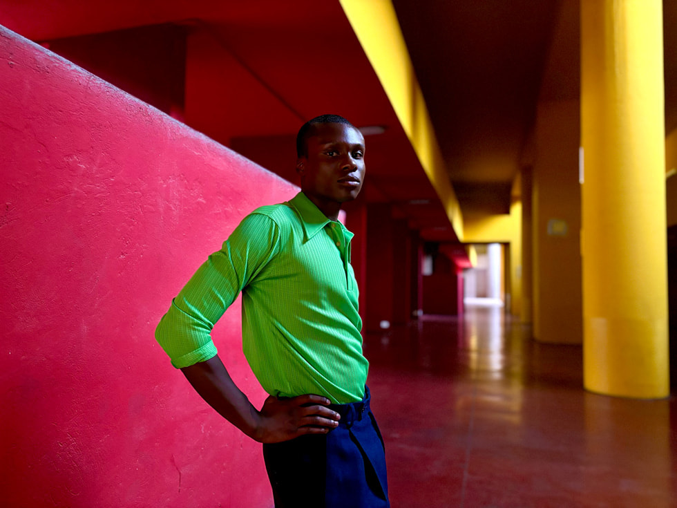

PRESS RELEASE September 12, 2023
Apple debuts iPhone 15 and iPhone 15 Plus
A huge leap forward for iPhone with a gorgeous new design featuring a durable, color-infused back glass and new contoured edge; the Dynamic Island; a 48MP Main camera with 2x Telephoto; and USB‑C

iPhone 15 and iPhone 15 Plus will be available in five stunning new colors: black, blue, green, yellow, and pink.
A Beautiful and Durable Design with an Advanced Display
Available in 6.1-inch and 6.7-inch display sizes,1 iPhone 15 and iPhone 15 Plus feature the Dynamic Island, an innovative way to interact with important alerts and Live Activities. The elegant experience fluidly expands and adapts so users can see the next direction in Maps; easily control music; and, with third-party app integrations, get real-time updates on food delivery, ride sharing, sports scores, travel plans, and more. The Super Retina XDR display is great for watching content, streaming Apple Fitness+ workouts, and playing games. Peak HDR brightness now reaches up to 1600 nits so HDR photos and videos look better than ever. And when it is sunny, peak outdoor brightness reaches up to 2000 nits — twice as bright as the previous generation.

Both models feature the Dynamic Island, which fluidly expands and adapts to a user’s alerts and Live Activities, creating an intuitive experience that feels magical.
Both models feature a sophisticated new look that’s built to last. For the first time in a smartphone, color is infused throughout the back glass, creating five beautiful colors. The back glass is strengthened with an optimized dual-ion exchange process before being polished with nanocrystalline particles and etched to create a luxurious, textured matte finish. A new contoured edge on the aerospace-grade aluminum enclosure feels even nicer in users’ hands, and the Ceramic Shield front cover continues to be tougher than any other smartphone glass. With a water- and dust-resistant design2 and industry-leading durability features, iPhone lasts and holds its value longer than any other smartphone. Plus, the internal design provides powerful sustained performance, while improving ease and affordability of repairs.
iPhone 15 and iPhone 15 Plus introduce a new contoured edge and durable, color-infused back glass.
A Powerful Camera to Capture Every Moment in Super-High Resolution
The advanced camera system on iPhone 15 and iPhone 15 Plus helps users capture everyday moments and cherished memories. A 48MP Main camera shoots sharp photos and videos while capturing fine details, with a quad-pixel sensor and 100 percent Focus Pixels for fast autofocus. Using the power of computational photography, the Main camera gives users a new 24MP super-high-resolution default, offering incredible image quality at a practical file size ideal for storing and sharing. By intelligently integrating hardware and software, an additional 2x Telephoto option gives users three optical-quality zoom levels — 0.5x, 1x, 2x — for the first time on an iPhone dual-camera system.
With next-generation portraits, it’s even easier to get stunning portraits of friends, family, and pets — with zero shutter lag.
Next-generation portraits on iPhone 15 and iPhone 15 Plus feature sharper detail, more vivid colors, and improved low-light performance. For the first time, users can take portraits without having to switch to Portrait mode. When there’s a person, dog, or cat in the frame, or when a user taps to focus, iPhone automatically captures depth information, so users can turn photos into stunning portraits later in the Photos app on iPhone, iPad, or Mac. For greater creative control, users can also adjust the focus point after the photo has been taken. Shooting at night gets better with improvements to Night mode, including sharper details and more vivid colors. When lighting is bright or uneven, new Smart HDR captures subjects and the background with more true-to-life renderings of skin tones, while ensuring photos have brighter highlights, richer midtones, and deeper shadows when viewed in the Photos app. This advanced HDR rendering is also available to third-party apps, so images can look even better when shared online. These improvements benefit the 48MP Main camera, Ultra Wide camera, and TrueDepth front camera.
- 
A16 Bionic: Proven, Powerful Performance
The fast and efficient A16 Bionic chip brings proven performance to iPhone 15 and iPhone 15 Plus, powering the Dynamic Island, computational photography capabilities, and more. With two high-performance cores that use 20 percent less power and four high-efficiency cores, the 6-core CPU is faster than the previous generation and easily handles intensive tasks while delivering extraordinary battery life. The 5-core GPU has 50 percent more memory bandwidth for smooth graphics when streaming videos and playing games. A new 16-core Neural Engine is capable of nearly 17 trillion operations per second, enabling even faster machine learning computations for features like Live Voicemail transcriptions in iOS 17 and third-party app experiences — all while protecting critical privacy and security features using the Secure Enclave.
A16 Bionic, with a 5-core GPU, enables smoother graphics when streaming videos and playing games — all while powering incredible computational photography capabilities and the Dynamic Island, with privacy built in.